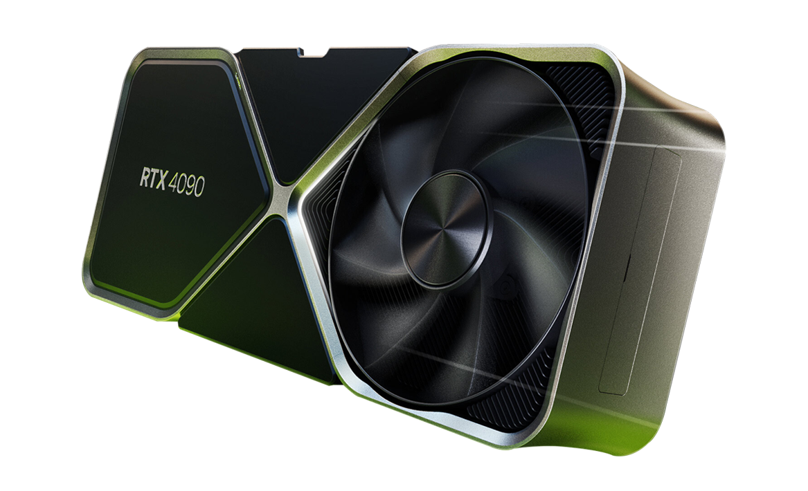
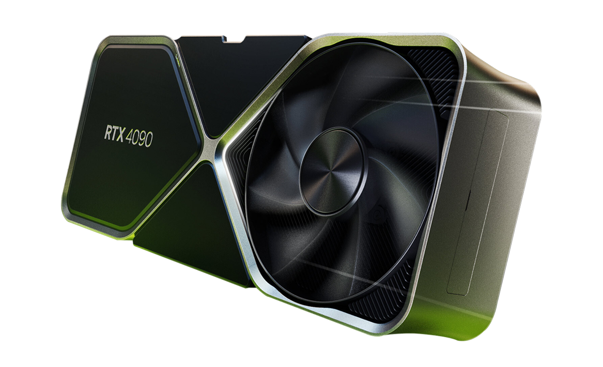

All About GPU's
 

A Graphics Processing Unit (GPU), also known as a video card or graphics card, is responsible for rendering images, videos, and animations. It significantly impacts the quality and performance of graphics in games and applications.
Main Functions of a GPU
- Rendering Graphics: Converts data into images, videos, and animations for display on your screen.
- Parallel Processing: Handles multiple operations simultaneously, essential for tasks like gaming, video editing, and scientific computations.
- Offloading Work from the CPU: Takes over graphical computations, freeing up the CPU for other tasks.
- Enhancing Visual Quality: Improves image quality and performance in games and professional applications.
Key Features to Consider
- VRAM (Video RAM): Determines how much graphical data can be stored, impacting performance at higher resolutions and textures.
- GPU Architecture: Newer architectures offer improved performance and efficiency.
- Clock Speed: Higher clock speeds indicate faster processing capabilities.
- CUDA Cores/Stream Processors: More cores generally result in better performance.
- Benchmarks: Check performance comparisons from trusted sources for real-world performance.